Compose capabilities
Combine learned policies with explicit perception, geometry, and control APIs.
CODE, MEMORY & PHYSICAL INTELLIGENCE
An Evolving Harness for Physical AI
Darwin Agent
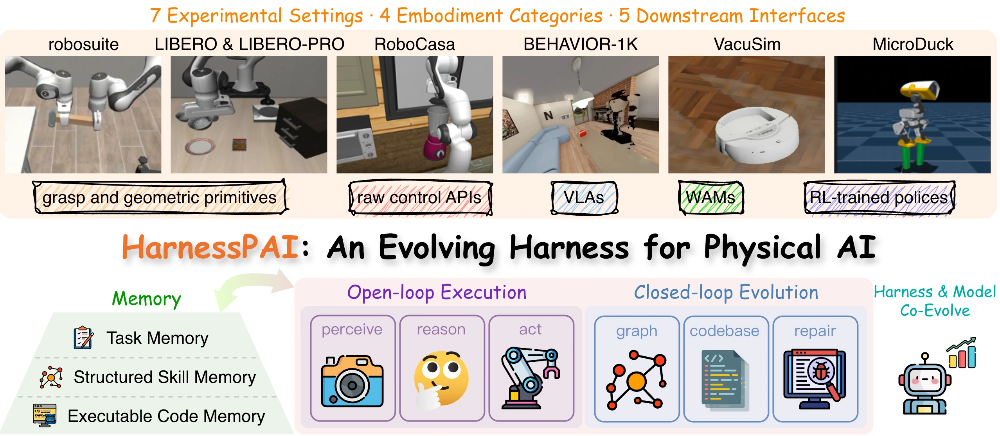
Physical AI aims to build embodied agents that perceive the world, understand and reason about it, and decide how to act. Yet the field has focused primarily on the action model that maps observations to low-level controls. Even strong action models remain vulnerable to scene perturbations and long-horizon tasks, motivating explicit support for perception and reasoning.
We introduce HarnessPAI, a model- and embodiment-agnostic harness that treats code as the executable and evolvable interface around an action primitive. Within a rollout, a fixed program guides and checks execution. Across rollouts, execution feedback revises the program and distills failures into reusable skills.
Across robot arms, household robots, a robot vacuum, and a legged agent, HarnessPAI improves task completion without retraining the underlying model, including +61.6 percentage points on LIBERO-PRO and +27.2 points on RoboCasa atomic tasks. Once selected, the program runs without online high-level LLM deliberation. In a separate downstream experiment, fine-tuning π0.5 on successful harness trajectories improves LIBERO-PRO success by 38.8 points. These results point toward physical agents that integrate perception, task reasoning, and action through executable, verifiable, feedback-driven programs.
Physical tasks demand more than an action prediction. HarnessPAI builds executable programs that coordinate perception, geometric reasoning, control, learned action models, and success checks. The program stays fixed within a rollout; feedback improves it between rollouts.
Combine learned policies with explicit perception, geometry, and control APIs.
Diagnose failures, revise isolated candidates, and validate before promotion.
Keep task programs, structured skills, and maintained implementations for reuse.
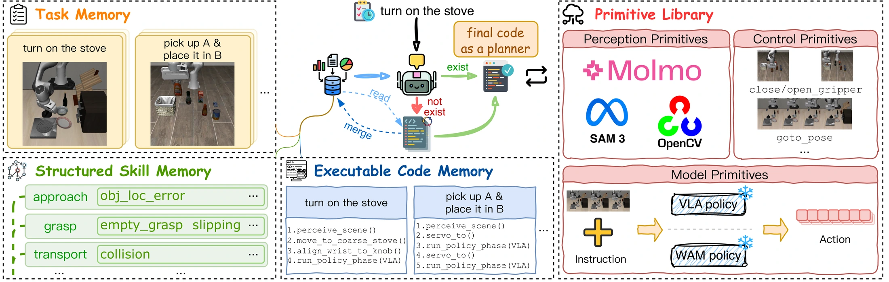
The task graph connects grounding, approach, grasp, lift, transport, and placement. At each stage, the fixed program invokes the appropriate perception or control unit: SAM3 and Molmo for grounding, control APIs for approach, lift, and transport, and the VLA for grasp and placement.
Action competence is only one part of a physical agent. The examples in Section 3 of the manuscript motivate explicit grounding, stable execution, and a program that can improve from experience.
Strong action performance does not guarantee reliable task completion when an instruction changes, a target moves, or a contact requires precision. HarnessPAI complements the frozen action model with explicit target grounding, geometric reasoning, and execution checks.
“Pick up the black bowl not between the plate and the ramekin and place it on the plate.”
Adding “not” before “between” changes the intended target to a different bowl, yet π0.5 still grasps the bowl specified by the original instruction. HarnessPAI re-grounds the instruction in code and grasps the correct bowl. The manuscript also shows that externally masking the scene does not resolve the error; the pair below shows the unmasked rollouts.
Original instruction: “Pick up the black bowl between the plate and the ramekin and place it on the plate.” Pure VLA ep0 success, before adding “not”; complete rollout at 2×.
2× source playback. Pure VLA ep6 vs. HarnessPAI ep9. Paper Spatial / Task 0: 0% → 92% (+92 pp), measured over 50 trials per method, not from this selected pair.
The original-instruction reference and the negated-instruction comparison use different episodes; per-episode positions vary. They are not an identical-initial-state comparison.
The VLA succeeds in the original layout. After the plate and the other black bowl swap positions, it initially carries the target toward the plate’s old location, then fails to complete placement. HarnessPAI re-locates the destination and succeeds in the swapped layout.
Pure VLA success before the swap. Standalone baseline reference, 2× source playback.
Plate and distractor bowl swapped on both sides. Complete rollouts at 2×; HarnessPAI’s source masking retained. Exact initial-state equality is unverified.
Paper Spatial / Swap / Task 1: 50% → 100% (+50 pp), measured over 50 trials per method, not from this selected pair.
Recorded instruction (Spatial / Task 1): “Pick up the black bowl next to the ramekin and place it on the plate.” LIBERO-PRO aggregate results.
On RoboCasa’s microwave task, the evaluated WAM reaches toward the small start button but fails to press it in the illustrated rollout. HarnessPAI completes the button-pressing task.
Each pair uses the complete corresponding column from the two three-view recordings, preserving aspect ratios. 1× source playback; the shorter clip holds its final frame. Different source sampling means clip lengths do not measure execution speed. RoboCasa aggregate results.
These examples motivate the harness; they do not establish that training eroded language or vision, or isolate a single cause of fine-manipulation failure.
Physical actions can leave persistent changes. A lost or overturned pot may leave no useful recovery within the rollout. Grounding and checks should therefore aim to prevent high-risk mistakes and improve first-attempt success.
2× source playback. Left: illustrative scripted drop in robosuite TwoArmLift, with the pot lost below the table. Right: successful lift. This is not a pure-WAM baseline or a RoboCasa benchmark comparison.
Keep the program fixed. Read observations, ground targets, and run predefined checks and recovery.
Use outcomes to revise the code, then validate the next candidate in a resettable experimental environment.
“Open-loop” is a program-level distinction, not blind action playback. It does not remove feedback control or guarantee safety; real-world resets cannot be assumed.
Code makes perception, grounding, action, and checks explicit within one control structure. It can invoke a learned VLA or WAM as a primitive, or use direct control APIs when no action model is available. The program executes within a rollout and evolves from feedback between rollouts.
Ground the scene, compose actions, and check task success during execution.
Locate and diagnose perception, grounding, and recovery decisions in an explicit control structure.
Revise a failing stage from feedback, re-evaluate, and retain a validated implementation.
HarnessPAI targets one task executed many times: development produces a reusable program, while a repair-skill library preserves lessons such as re-localizing after a missed grasp or checking a button press before proceeding. Repeated deployment offers opportunities to improve the program; it does not relax the requirements of each physical attempt.
High-level reasoning belongs in program development, not at every action step. During a rollout, the program can read observations, branch, check outcomes, and recover without online high-level LLM deliberation.
Specify the task, permitted primitives, and an authoritative success contract.
Preflight an isolated candidate, then run it across a batch of environments.
Use rollout evidence and VLM feedback to identify the failing program stage.
Revise the implementation, check success, and preserve validated code and skills.
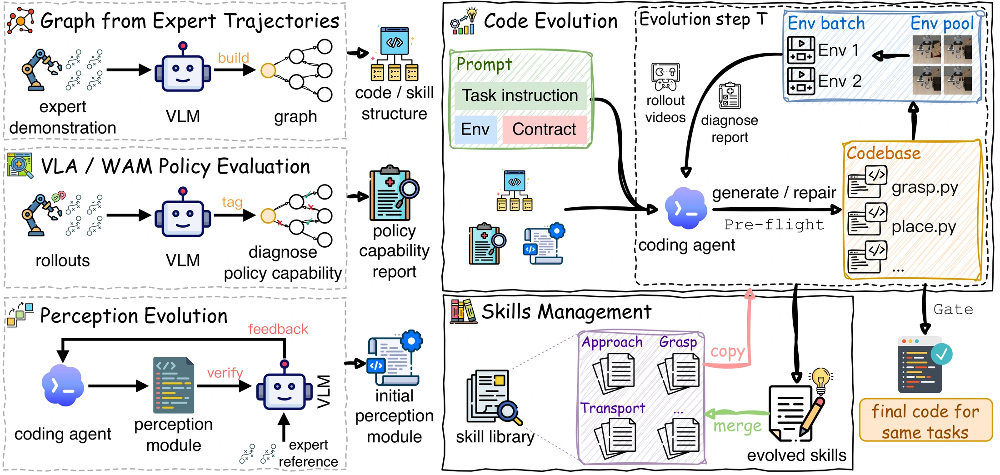
The executable task program is fixed for one rollout. Sensor-driven branches and predefined recovery remain active. “Open-loop execution” refers to the program-level plan, not blind action playback or the absence of control feedback.
A skill is a workflow-node-indexed account of a problem and its repair, linked to maintained executable code. Task Memory retrieves programs, Structured Skill Memory retrieves repair knowledge, and Executable Code Memory preserves implementations.
For example, aligning an object to a basket mouth requires the upper rim, not the basket-body centroid. A grounding repair can correct the target without rewriting the placement controller.
VLM diagnosis guides revision, while the environment's deterministic success condition gates promotion. Crashes and timeouts count as failures. Evolution ends when development rollouts meet the contract or the round budget is exhausted; unsuccessful candidates do not replace the validated program.
Successful rollouts supply success-filtered demonstrations for supervised fine-tuning. This is a downstream use of the evolved harness, separate from the main frozen-backend experiments. The reported work does not establish a complete bidirectional harness-model co-evolution cycle.
From single-arm manipulation to a mobile household robot, a cleaning robot, and a legged agent: evolve the harness around the available action interface.
| Experiment | Reference | HarnessPAI | Measure / scope |
|---|---|---|---|
| LIBERO-PRO | 34.9% (π0.5) | 96.5% | Success · Swap + Task |
| RoboCasa | 65.0% (WorldDreamer) | 92.2% | Success · 18 Atomic-Seen tasks |
| robosuite | 81.0% (ASPIRE) | 96.3% | Success · 7 tasks |
| LIBERO | 96.9% (π0.5) | 98.1% | Success · 3 suites |
| BEHAVIOR-1K | 84% / 72% (zero-shot) | 100% / 92% | Radio / soda can · after adaptation |
| VacuSim | 4.90% / 11.7% (40 × 40 campaign start / 25 × 25 initial policy) | 63.76% / 53.92% | Coverage · 40 × 40 / 25 × 25 maps |
| MicroDuck | Up to 0.8 m drift (PPO Walker) | Near-zero lateral error | Reported straight-line trajectory |
ROBUST MANIPULATION · VLA
Controlled changes to object positions and task instructions expose failures hidden by familiar layouts. HarnessPAI improves the same π0.5 action backend from 34.9% to 96.5% across the reported perturbations.
Selected task: cream cheese, not alphabet soup. Paper Task 0: 0% → 100%. The subset score above averages all 10 Object / Task tasks.
Paper Task 1: 16% → 90%. The subset score above averages all 10 Goal / Task tasks.
Paper Task 1: 50% → 100%. The subset score above averages all 10 Spatial / Swap tasks.
All three comparisons use 2× source playback, with pure VLA on the left and HarnessPAI on the right. Each pair shares a task, not a verified identical initial state. Masked observations are preserved. Shorter clips hold their final frame with an explicit end label.
KITCHEN MANIPULATION · WORLD ACTION MODEL
Explicit perception and geometric control complement WorldDreamer in kitchen tasks. On the evaluated Atomic-Seen subset, successful episodes increase from 234 / 360 to 332 / 360.
Task 16; source seed 53, layout 2, style 2. The +27.2 pp result is the manuscript’s 18-task, 20-trial-per-task aggregate, not a statistic computed from this pair. Different source sampling prevents a timing comparison.
SINGLE-ARM & BIMANUAL · GRASPNET
Seven tasks test grasping, insertion, stacking, wiping, and two-arm coordination. HarnessPAI reaches 100% on five tasks, 91% on two-arm lifting, and 83% on insertion.
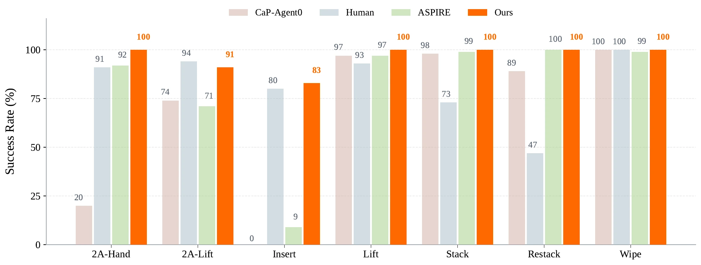
Successful rollouts only. Rate differences are cross-paper comparisons, not a pure-model ablation. Original recordings are 224 × 224 pixels.
STANDARD MANIPULATION · VLA
The harness also improves a strong starting point: π0.5 rises from 96.9% to 98.1% across Spatial, Object, and Goal.
| Method | Spatial | Object | Goal | Overall |
|---|---|---|---|---|
| π0.5 | 95.6% | 100% | 95.2% | 96.9% |
| HarnessPAI | 97.2% | 100% | 97.2% | 98.1% |
BEYOND FAMILIAR SCENES
The “not between” comparison and the changed plate location are presented in Motivation. Those are Task / Swap perturbations, separate from the standard-suite result above.
Instruction and scene perturbationsMOBILE HOUSEHOLD MANIPULATION · GRASPNET
A humanoid upper body on a mobile base must first reach an object, then pick it up. Program adaptation repairs the gap between navigation and end-to-end completion on two household tasks.
FROM NAVIGATION TO COMPLETION
The final soda-can program completes 23 of 25 evaluated trials. Eight adaptation rounds improve task success from 72% to 92% on the evaluated seeds.
The reference is the zero-shot program, not a pure-model baseline or an unseen-seed comparison.
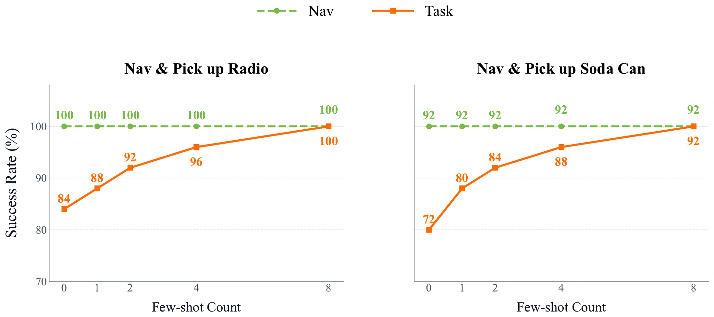
The initial program is evolved on seeds 26–35 and tested zero-shot on seeds 1–25. Eight further rounds adapt it on previously failing seeds within 1–25. Navigation remains at 100% for radio and 92% for soda can throughout these rounds.
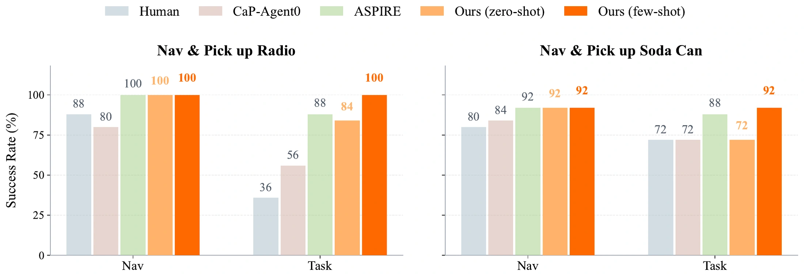
COVERAGE & NAVIGATION · CONTROL API
No learned action model is required here. A differential-drive vacuum uses velocity commands and read-only sensor feedback; supervisor-measured cleaning progress guides program evolution.
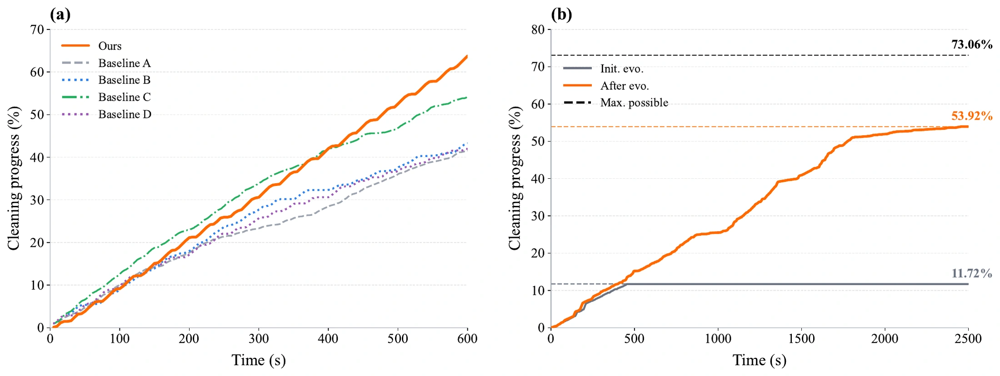
Playback multipliers refer to the original recordings, not simulation time. The two maps have different time budgets and attainable coverage. No improvement over the strongest 40 × 40 baseline is inferred from the plot.
Coverage is measured by the ground supervisor, not planner-side tile counts. The unfurnished 40 × 40 map improves from 4.90% to 63.76%; the furnished 25 × 25 map improves from an initial-policy coverage of 11.7% to 53.92%.
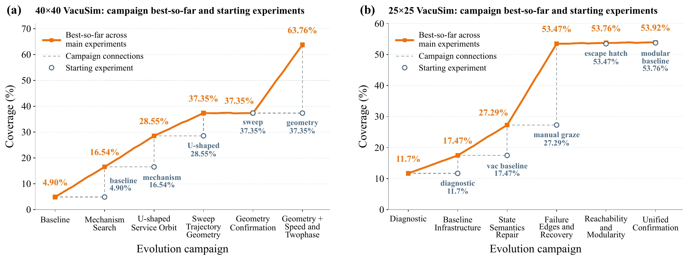
Each outer round selects a technical direction, explored through isolated candidates with its own Skill and Code memory. Three valid attempts without improvement retire that direction; bounded combinations of validated skills are tested before moving to another direction. Failed candidates remain diagnostic evidence without overwriting the retained program.
LEGGED LOCOMOTION · FROZEN PPO
The learned Walker policy advances but drifts sideways. HarnessPAI measures the heading error and steers the same policy back toward the line, without retraining the Walker.
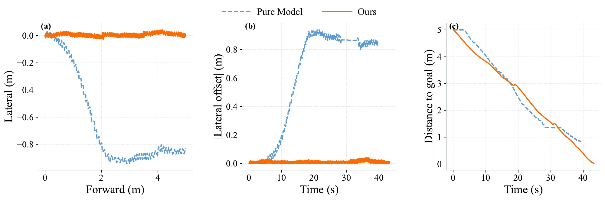
SUPPLEMENTARY DEMONSTRATIONS
The videos illustrate straight-line walking with ball contact, commanded head motion while balancing, and walking on stilts. They are separate from the manuscript’s straight-line trajectory above.
These selected demonstrations carry no additional success-rate or percentage-improvement claims.
Supplementary comparison, 1× source playback. Front and side views show a fixed head for the frozen policy and commanded nodding with HarnessPAI. Both robots remain standing in this selected recording; the visible nod counts are clip observations, not manuscript success statistics.
Supplementary comparison, 1× source playback. The pure policy veers past the ball; the feedback-guided policy reaches it. No quantitative improvement is attributed to this selected pair.
A harness evolved with π0.5 is reused with DreamZero on LIBERO-PRO Object, without re-evolution.
Object suite only. These are not averages across all three LIBERO-PRO suites.
Fixed-program execution removes online high-level LLM deliberation. Perception, action inference, simulation, and hardware still have costs.
Reported serial execution speedups on LIBERO-Goal Task 1 relative to Harness VLA, under Swap and Task perturbations. This is not a program-development or lifecycle-cost estimate.
With the skill library, three representative LIBERO-PRO Object tasks reach 100% development-batch success within the first two rounds. Without it, the observed trajectories include delayed jumps, oscillation, and gradual improvement.
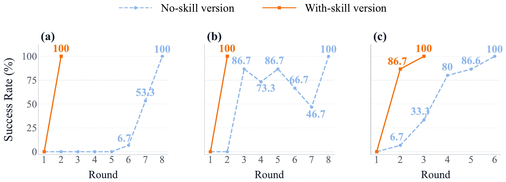
Evolution produces more than a capable policy wrapper: it produces a reusable source of training data. Once validated, the converged code can run repeatedly across layouts and instructions without high-level LLM deliberation at every step. An environment-success gate turns reliable execution into demonstrations for the action model.
Retain the task program after evolution and validation.
Re-run the same program under base, Swap, and Task conditions.
Retain trajectories that pass the environment task-success check; discard failures.
Fine-tune on successful demonstrations to transfer corrections into model weights.
| Advantage | Reported evidence | Value for collection |
|---|---|---|
| Efficient execution | 23.1× / 18.4× serial speedup | Lower repeated-execution overhead than Harness VLA on LIBERO-Goal Task 1 under Swap / Task. |
| No stepwise deliberation | 0 online high-level LLM API charge | Fixed code needs no stepwise high-level reasoning calls. Perception, action inference, simulation, and hardware still have costs. |
| Success filtering | Environment-confirmed successful trajectories only | The collector need not succeed on every seed: failed attempts are excluded from the demonstrations. |
The collected trajectories improve the underlying model. The following post-training experiment is separate from the main results, which evolve code around a frozen action model.
The full mixture samples all three suites under base, Swap, and Task in equal proportion across nine categories. π0.5-Base improves from near zero to 53.3%. Both results use each model’s best checkpoint within 30,000 training steps.
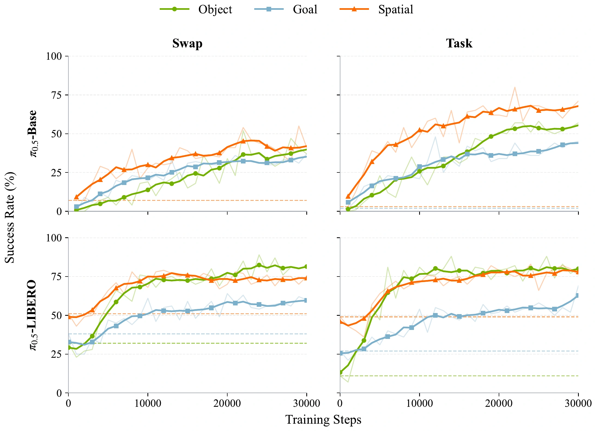
| Suite | Before fine-tuning | After fine-tuning |
|---|---|---|
| Object | 21.5% | 88.0% |
| Spatial | 50.0% | 82.5% |
| Goal | 32.5% | 54.5% |
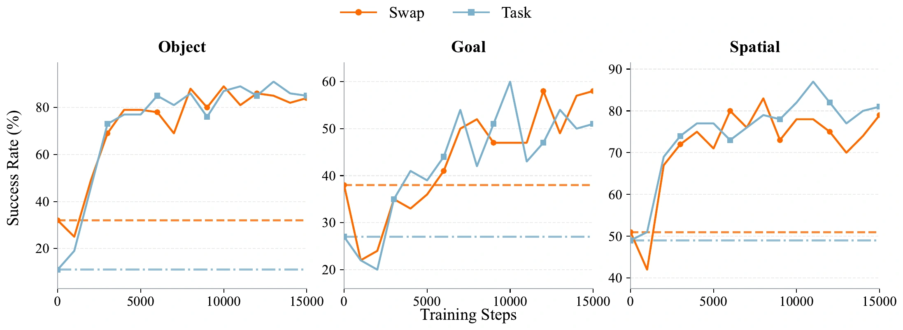
For each task, seeds 0–39 supply the additional fine-tuning data; seeds 40–49 are held out for evaluation. Reported maxima follow the manuscript’s best-checkpoint convention, not final-step performance.
HarnessPAI targets repeated-task settings where a task program can be developed, evaluated, and reused. It is not demonstrated as a universal one-shot solution to unseen tasks. Performance depends on the available primitives, perception quality, success contract, and evolution budget.
Reference methods and metrics differ across experiments: task success, floor coverage, and lateral error measure their respective task objectives.
Publication details and the official citation will be added when available.